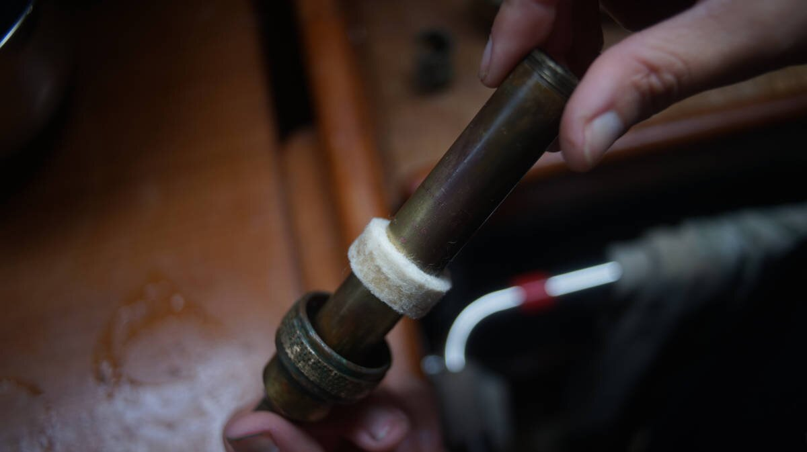

galley plumbing
2019.04.04
Whangarei, New Zealand.
Click below dates for more recent updates:
In Canada, and all the way down to Mexico, we were using our salt water pump in the galley, and unfortunately, in warmer waters, it caused the inside of the sink drains to corrode. We had to replace those, but removing the drains meant disconnecting the pipes below, which in turn revealed some pretty nasty stuff.
The pipes were clogged, and old - overall disgusting. So. What started as a drain-replacing project, turned into a galley sink overhaul. We spent much time at Mitre10, laying pipes out on the floor, to find the right-sized elbows and tubes.
"Okay. Drain head, goes to the lock joint, which goes to the tube, upsized to another, bigger joint, to another tube, to an elbow, to another tube..."
We had a nice puzzle thing going on, an exploded view of our future sink setup. Employees in the store stood around us, helping us find the correct parts.
Passing pliable pipes through floors and narrow gaps is always tough. We taped the end of the pipe to the new one and pulled, hoping it wouldn't come apart in the process. Do it slow, so slow, otherwise you're FUCKED. Being gentle and patient is a common tactic when it comes to boat projects.
We also replaced the galley faucet. The boat had a pressure faucet before, but we didn't use it, because we prefer to use the foot pump—more economical you see. Every press is a 1/4 cup of water. We removed the pressure faucet, as well as the old foot pump faucet that came through inside the sink (which had also begun to leak). We installed our new faucet head between the two sinks, in the place of the old one, and plugged up the hole the foot pump faucet left behind. We opted for a simple model, because the more extravagant, heavy duty one with a pumping handle didn't fit in that space vertically—shame (see update below).
2020.09.09
Victoria BC, Canada

Our sink is now equipped with a Fynspray WS-62 brass hand pump! The pump came off an old boat, and was sold to us at a very good price. We were looking for a durable replacement to our baby foot pump, it was leaking badly during our trip across the north_pacific_ocean and the new models did not fit our pedals. The hand pump doesn't draw out too much water, and looks very good.
Signs that the plunger washer needs to be serviced:
- Handle feels loose.
- Pump doesn't stay pressurized for long, the pump will 'sing' as water moves past the seal.
2022.10.18
Victoria BC, Canada
We noticed our pump didn't have a lot of suction, we attributed this to a bad plunger washer(and we were right), but we took too long to change it and because we did, it caused some stress on the pin keeping the handle and pump lever together, and it broke. Finding a replacement pin isn't a big deal, but the stress did cause the hole to stretch (we'll have to keep an eye on that). For now, we added a SS pin(shackle pin, tight fitting with no threads) to keep the two parts together.
We only took the pump apart once, and we weren't sure how to take it apart again without damaging it, but we found instructions online on how to do it:
To replace the plunger washer, it is necessary to unscrew the spout body & spout assembly from the barrel assembly. (As sealant has been used on the thread, run the spout body under hot water and then tap it gently with a soft-headed mallet or a piece of soft wood. Place the pump vertically in a bench vice, gripping the barrel assembly below the flange.) Do not use too much force on the spout & do not use any tools as they may cause damage to the barrel. The complete handle & plunger assembly can now be removed. By holding the plunger valve body in a bench vice, the valve seat can be unscrewed, enabling the leather (or nitrile) cup washer to be replaced.
We were able to unscrew the barrel assembly without using a bench vice. We slid an adjustable wrench under the counter and around the nut (this is the only part that you can grip without damaging the pump). We used a soft-headed malett to knock on the spout to loosen it. It came easy. The old leather plunger washer was very old, its edges ground down. These are no longer in circulation because they have a tendency to dry out when the pump has been unused for too long.
The company that makes the Fynspray pump now sells nitrile washers that won't suffer this problem. When looking for part numbers online, we saw that it was recommended to buy two sets of parts:
- Conversion kit WS62/22 (brass valve seat and backing washer)
- Service Kit WS62/17A (nitrile washer, felt packing and a quad ring)
We bought the two sets at Trotac in Victoria.
As mentioned above, felt packing comes with the nitrile washer(Service Kit WS62/17A). It may be possible to use something else, but it needs to fit tightly and if too thin it'll get squeezed out.
The plunger valve body ought to have the marble in it (possible to use a glass marble, or SS ball of a similar size. This pump uses two marbles, one in the barrel assembly and another in the plunger valve body), with the opened end facing downward (screwed onto the threaded backing washer). When assembling the valve seat, new nitrile washer and backing washer, be sure to tighten it well. The company recommends adding loctite to the threads, we didn't do this, but we screwed the two pieces together, screwing them in and out, in an out a few times to work the threads into each other. New machined parts have very stiff threads, if you don't do this the pieces won't thread into each other all the way and may come loose.
When screwing the barrel (part with the spout) of the pump on, hold the top handle so that the plunger doesn't spin (if it spins, the valve seat and nitrile washer may come undone). We had to add some teflon tape to the threads of the barrel to keep it from leaking. A new seal will make it difficult to pump at first, but it will soften and become easier to use overtime (took about 2 weeks for ours).